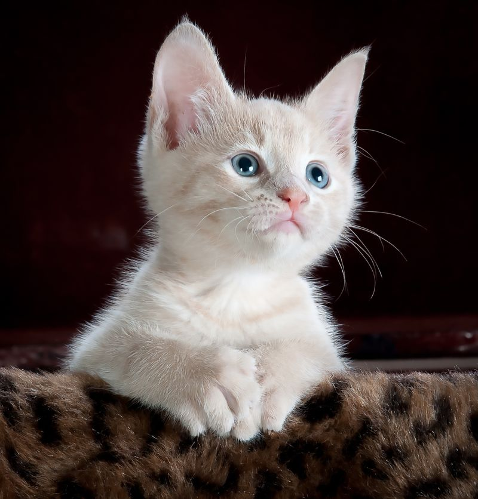
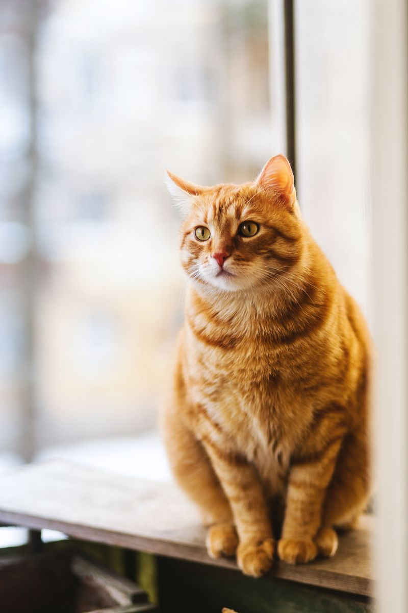
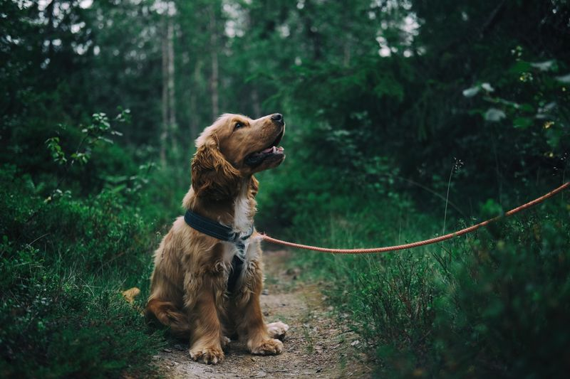
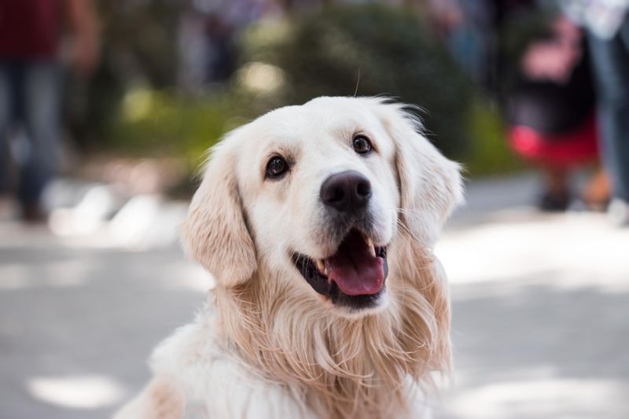
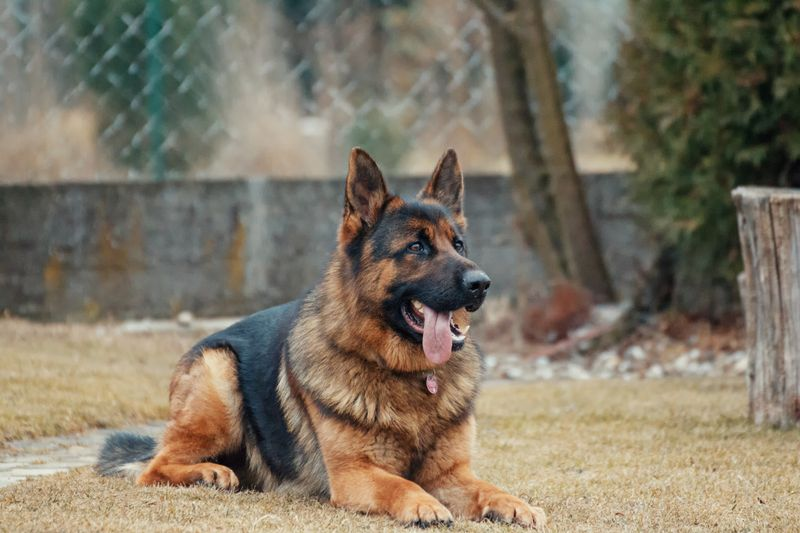
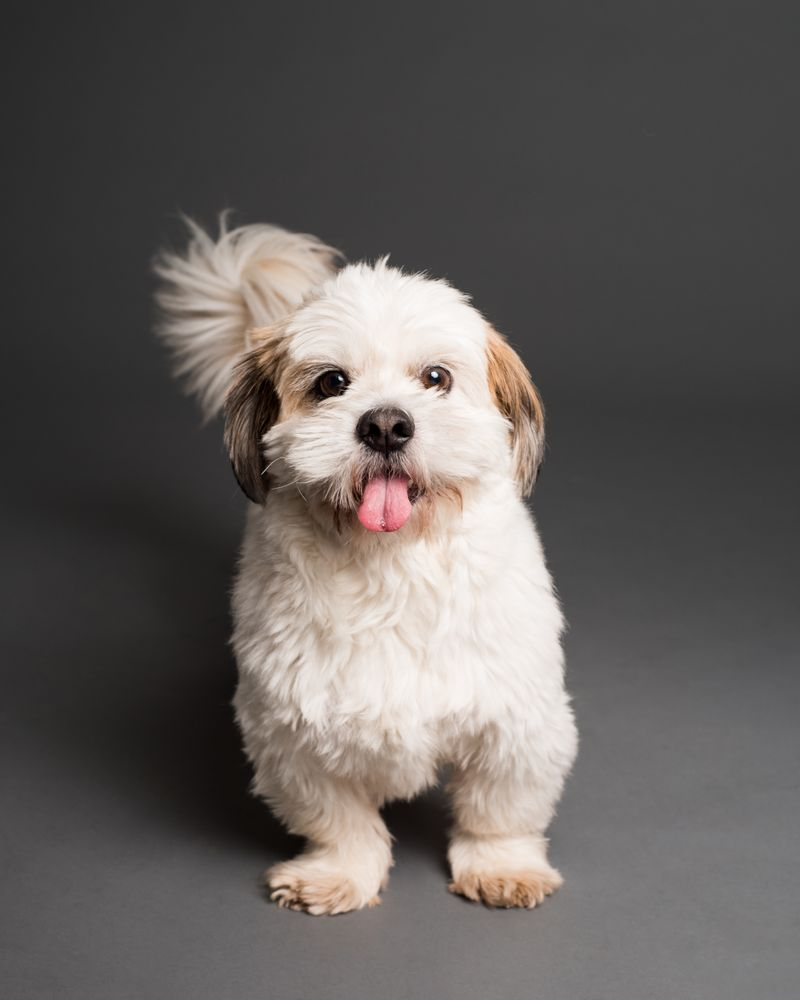

Se extravió Milo cerca del Parque Centenario. Llevaba collar azul con chapita pero sin teléfono. Es muy dócil, responde por su nombre y necesita medicación diaria.
Última vez visto (manual):
Av. Díaz Vélez & Campichuelo, CABA
Ver ubicación aproximada
Sofía Romero
¡Lo compartí en el grupo de vecinos de Caballito! Ojalá aparezca pronto 🙏
⚠️ ✦ [ PUBLICACIÓN DE MUESTRA / DEMO ]
Martín Gómez
Palermo, CABA · Hace 5 h
DEMO🟢 Encontradas

DEMO
1/2
Gatita encontrada en estación
🐱 GatoSiamés mestizoHembra
Encontré esta gatita asustada resguardándose de la lluvia en una estación de servicio. Tiene ojos celestes intensos y collar rosa sin identificación. La tengo en tránsito.
Av. Santa Fe y Scalabrini Ortiz, CABA
Gonzalo Paz
Tiene carita de estar bien cuidada, seguro su familia la está buscando.
PUBLICIDAD PATROCINADA📍 Palermo, CABA

Veterinaria & Urgencias 24h San Roque
🏥 Veterinaria 24h
🩺 Atención médica veterinaria, guardias 24 horas, ecografías, cirugías y vacunación completa para tus mascotas. ¡Mencionando Buscapet tenés un 15% de descuento en la primera consulta!
⚠️ ✦ [ PUBLICACIÓN DE MUESTRA / DEMO ]
Valentina Díaz
Nueva Córdoba, Córdoba · Hace 12 h
DEMO🟣 Adopción


DEMO
1/2
Luna
🐶 PerroMestiza medianaHembra
Luna tiene 6 meses, está desparasitada y con la primera vacuna. Es súper juguetona y sociable con otros animales y niños. Se entrega en adopción responsable con compromiso de castración.
Zona Nueva Córdoba, Córdoba Capital
Carla Méndez
¡Hermosa Luna! Ojalá encuentre un hogar lleno de amor. 🐾
⚠️ ✦ [ PUBLICACIÓN DE MUESTRA / DEMO ]
Federico Álvarez
San Carlos de Bariloche, Río Negro · Ayer
DEMO👁️ Vistos en vía pública

DEMO
Pastor Alemán visto en la costa
🐶 PerroPastor AlemánMacho
Vi este perro deambulando cerca de la costa del lago. Parece perdido y desorientado, tiene collar de cuero marrón pero no se deja agarrar. Anda por la zona del centro cívico.
Av. 12 de Octubre y Costanera, Bariloche
PUBLICIDAD PATROCINADA📍 San Carlos de Bariloche

Pet Shop & Boutique Huellitas Felices
🛍️ Pet Shop & Alimentos
🍖 Alimento balanceado premium de todas las marcas con envío a domicilio sin cargo en el día. Snacks naturales, juguetes interactivos, camas ortopédicas y accesorios.
PUBLICIDAD¿Tenés una Veterinaria o negocio?
Anunciá en Buscapet para llegar a miles de familias que aman a sus mascotas en toda Latinoamérica.
☕Apoyá a Buscapet ☕
Buscapet es 100% gratuita y sin fines de lucro. Tu cafecito nos ayuda a costear servidores.